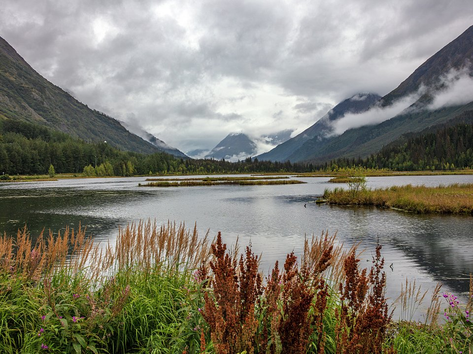

Homer Spit · Hotel
Land’s End Resort
A hotel at the tip of the Spit with views across the bay.
Official details for Land’s End ResortThe end of the road on Kachemak Bay.
Homer sits at the end of the Sterling Highway, where the Homer Spit runs nearly five miles into Kachemak Bay and glaciers and volcanoes line the far shore. Land at Homer, or on Beluga Lake in a floatplane, stay on the Spit, go halibut fishing or take a water taxi to Halibut Cove for dinner at the Saltry, and watch eagles and sea otters from the boardwalk.

In our plane it’s a short flight.
Where we’re staying Dinner Things to do The plan
I’ll handle the flight planning; you handle the fun planning! Pilot view
Time illustration: direct distance at 150 KTAS plus 15 minutes for departure and arrival, matching the discovery page. Use ForeFlight for your actual flight plan.
Check the weekend weather at both ends → Flight category, your minimums and the crosswind on the best runway.
More in Aviation & getting around below. Crew cars change often: call the FBO before you go. How to have a rental car waiting at the FBO · Know something we missed? Tell us.
PAHO, Homer, is a non-towered state airport at 84 feet with a 6,701-foot runway near the base of the Spit. Floatplanes and amphibians can use 5BL, Beluga Lake, right next to the airport.
Homer Airport, Homer, AK
Strong winds off the bay and over the Kenai Mountains; low ceilings come in fast. No live fuel price is shown.
Southcentral Alaska flying: fast-changing weather, low ceilings in mountain passes, strong winds on the coast and over glaciers, long summer daylight and short winter days. Carry survival gear, file a flight plan and check the FAA weather cameras. From the lower 48 this is an expedition, not a weekend: the usual route is the Alaska Highway through Canada (customs, eAPIS and Canadian survival-equipment rules), roughly a week each way. Most visitors are Alaska-based pilots, or fly commercially and book local air taxis and flightseeing.
Homer, AK · manager 907-235-5217
Water lanes: NE/SW, 3,000 × 600 ft. 100LL listed.
Beluga Lake is next to the land airport and busy with floatplane operators in summer.
Water landing rules, conditions and docking change; call the operator and check the chart supplement before you go.
Rates and availability need travel dates. Summer books early.
A hotel at the tip of the Spit with views across the bay.
Official details for Land’s End ResortLodges, cabins and B&Bs.
Homer Chamber for More places to stayPrices and availability for your dates, through our partner Stay22. This is an affiliate link: we may earn a commission at no cost to you. The picks above are never paid.
Reserve weekend dinners.
Seafood in a boardwalk village across the bay, reached by the Danny J ferry.
Official details for The SaltrySeafood on the Spit and in town.
Homer Chamber for More restaurantsTides here are huge; check the tables.
This prototype links to the local visitor site. It does not yet match events to your travel dates.
Thousands of migrating shorebirds.
Homer Chamber for Kachemak Bay Shorebird FestivalHalibut and salmon charters.
Homer Chamber for Fishing seasonFly-outs across Cook Inlet.
Homer Chamber for Bear-viewing seasonCheck the local calendar when choosing a weekend, and confirm dates and tickets with the organizer.
A sample Homer weekend. Written for Alaska-based pilots and visitors already in Alaska. No bookings or availability confirmed.
Land at PAHO or 5BL mid-morning.
Lunch on the Spit.
Eagles and otters at the harbor, then back to the airport.
Land at PAHO or 5BL, subject to weather and your actual flight plan.
Walk the Spit boardwalk.
Dinner on the Spit.
A halibut charter.
Ferry to Halibut Cove.
Dinner at the Saltry.
Eagles and otters at the harbor.
Allow time at the airport or dock.
Alaska weather changes fast; keep a margin and an alternate.
A halibut charter.
The ferry to Halibut Cove.
Dinner at the Saltry.
These details make the difference between an appealing list and a usable getaway.
Lodging and the Saltry ferry.
About 100 nm southwest.
Some of the largest tides in North America.
June to August.
Picks and links reviewed by WingAway Weekends. Hours, prices, menus and availability change often, so confirm directly with each place before booking. Spotted something out of date, or have a favorite we missed? Email us at hello@wingawayweekends.com.
WingAway Weekends helps you discover the destination. Use ForeFlight and current official aviation information for route, performance, weather, NOTAMs and preflight decisions. Flight planning and PIC responsibility stay with the pilot.